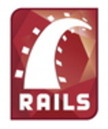

Características de Ruby on Rails
Ya que hablamos de las características del lenguaje Ruby, resumiremos también las características de ese framework que tanto éxito tiene en el desarrollo web.
Es un proyecto de código abierto por lo que no requiere de licencias.Es también independiente de la aspecto de datos y de registro activo (que quiere decir que los objetos que se creas son guardados en la base de datos).Nos ahorra tiempo al "no tener que" implementar código de configuración, ya que este lo genera automaticamente si se siguen las convenciones de nomenclatura. Automatizacion de una serie de tests sencillos pero útiles.
Posee tres entornos predeterminados: desarrollo, pruebas y producción que facilitan el cico de desarrollo del software.
Comparación de ruby y rubyOnRails
Haremos ahora una pequeña comparación entre Ruby y Ruby on Rails en formato tabla:
| Aspecto\Lenguaje | Ruby | Ruby on Rails |
|---|---|---|
| Principio | Composicion de interfaz de usuario | Basado en CoC y DRY |
| Programación | Programado en C | Programado en Ruby |
| Marco de trabajo | Lenguaje de proposito general | Framework de desarrollo de apps web |
| Inspiración | Smalltalk y Perl | Django,Laravel y Python |
| Sintaxis | Relacionada con la de Python y Pearl | Relacionada con la de Python, Phoenix y otras |
Añadimos también un interesante video en el que se resume Ruby on Rails: